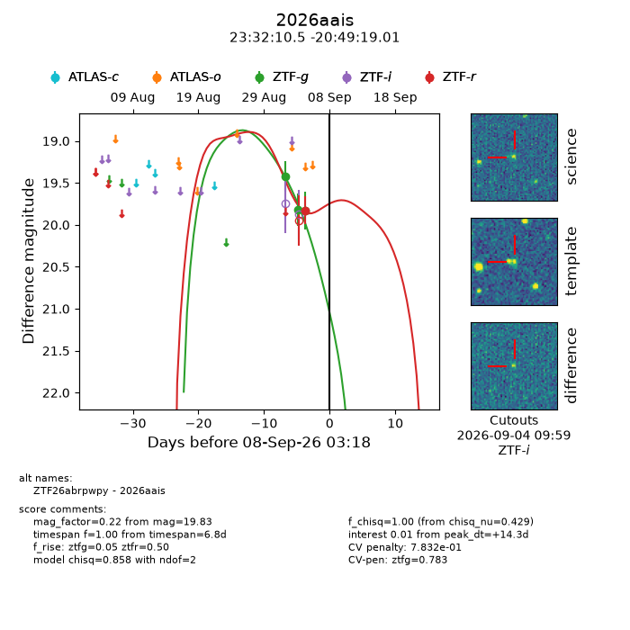
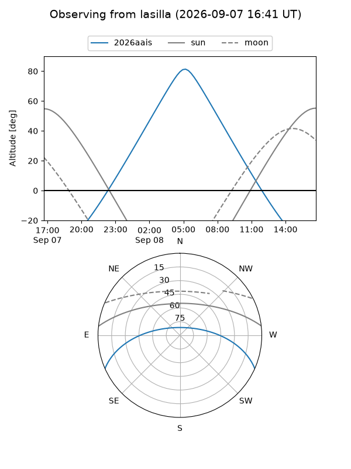
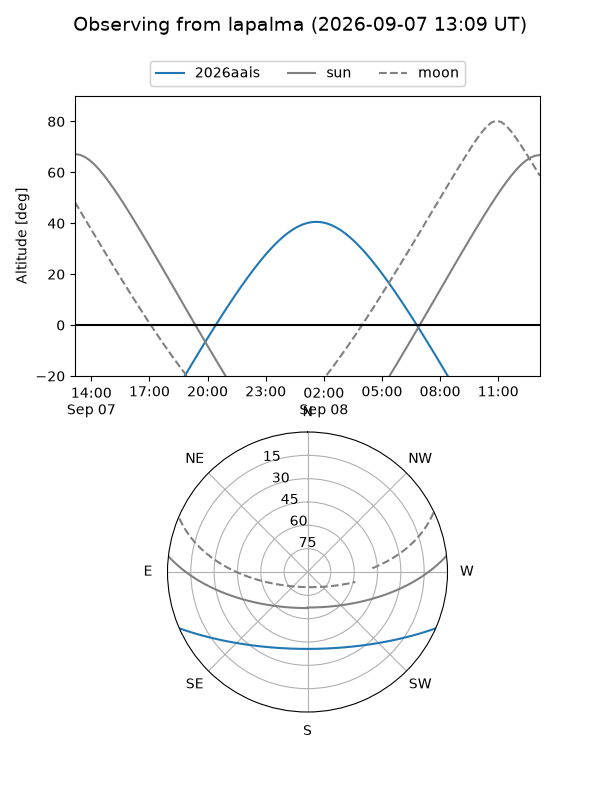
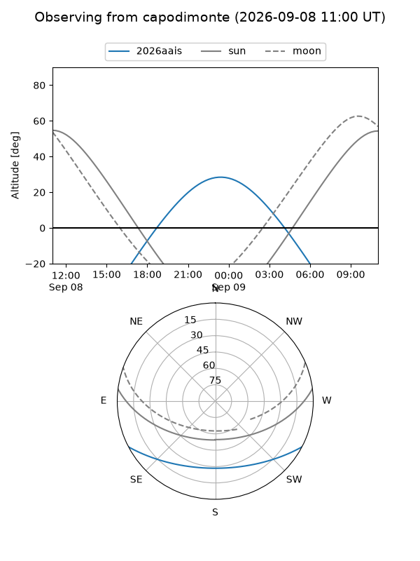
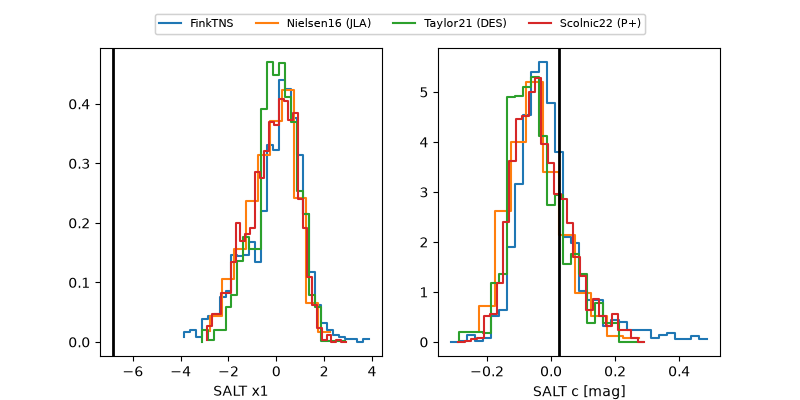

2026aais
Target 2026aais at 2026-09-08 15:12
Aliases and brokers:
FINK-ZTF: ztf.fink-portal.org/ZTF26abrpwpy
Lasair-ZTF: lasair-ztf.lsst.ac.uk/objects/ZTF26abrpwpy
ALeRCE-ZTF: alerce.online/object/ZTF26abrpwpy
YSE-PZ: ziggy.ucolick.org/yse/transient_detail/2026aais
TNS name: wis-tns.org/object/2026aais
Direct TNS query: direct search
alt names
ZTF26abrpwpy (ztf,fink_ztf)
2026aais (tns,yse)
Coordinates:
equatorial (ra, dec) = 353.0439,-20.82195
equatorial (HMS+DMS) = 23:32:10.53,-20:49:19.01
galactic (l, b) = (47.8824,-70.85524)
Flags:
TNS type: nan
peak dt: +14.7
likely cv: !!
Photometry:
last ztfg=19.82, ztfr=19.83
2 ztfg, 1 ztfr detections
Lightcurve

Visibility



Additional plots
